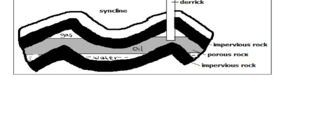

Answer all the questions in this section.
1. 1. (a) State three reasons why it is important to study Geography. (3 marks)
(b) Identify three ways in which Geography is related to Agriculture. (3 marks)
2. (a) What is weather forecasting? (2 marks)
(b) Give three elements of weather. (3 marks)
3. (a) Name three features that make up the hydrosphere. (3 marks)
(b) Explain how the movement of magma causes earth movement. (2 marks)
4. (a) Distinguish between a river capture and a river rejuvenation (2 marks)
(b) Give three ways in which a river transports its load. (3 marks)
5. State four ways in which the savanna grasslands have adapted to climatic conditions. (4 marks)
Answer traestion 6 and any other two questions from this section.
6. Study the map of Oyugis 1:50,000 (sheet 130/1) provided and answer the following questions.
(ii) Give two scales that have been used in the map extract. (2 marks)
(b) (iii) Measure the length of the township boundary shown on the map. Give your answer in kilometres. (2 marks)
(iv) Calculate the area covered by Kodera forest. Give your answer in square kilotnetres. (2 marks)
(i) Identify the methods that have been used to represent relief of the area covered by the map. (2 marks)
(ii) Name the physical features found in the grid square 6842. (2 marks)
(c) Describe the drainage of the area covered by the map. (6 marks)
(d) (i) Apart from agriculture, name two other economic activities in the area covered by the map. (2 marks)
(ii) Citing evidence from the map, give three reasons why the area covered by the map is suitable for agricultural activities. (6 marks)
7. (a) (i) Apart from metamorphic rocks, name two other categories of rocks. (2 marks)
(ii) Describe the following processes of formation of metamorphic rocks.
(b) Explain three ways in which rocks are significant to human activities in Kenya. (6 marks)
(c) You intend to carry out a field study on the types of rocks within the school locality. (i) Identify three items that you will carry during the study. (3 marks)
(ii) State three activities that you will be involved in during the study. (3 marks)
(iii) List three types of metamorphic rocks that you are likely to identify. (3 marks)
8. (a) (i) Apart from anticlinorium and syclinorium complex, name three other types of folds. (3 marks)
(ii) With an aid of a well labelled diagram, describe the formation of anticlinorium and synclonorium complex. (6 marks)
(b) (i) Name the young fold mountains found in the following continents. Africa (1 mark)
(ii) Describe the formation of fold mountains according to the convectional current theory. (4 marks)
(c) Explain four effects of folding on physical environment. (8 marks)
9. (a) (i) Define the term hydrological cycle. (2 marks)
(ii) Give three factors that influence the occurrence of surface runoff. (3 marks)
(iii) State the significance of the hydrological cycle. (4 marks)
(b) Describe how the following lakes were formed. (i) moraine dammed lake (2 marks)
(c) Explain ways in which lakes modify the climate of the surrounding areas. (6 marks)
(d) Give four reasons why some lakes have fresh water. (4 marks)
10. (a) (i) What is soil structure? (2 marks)
(ii) Explain how the following factors influence soil formation.
(b) Describe the following properties of soil.
Soil colour (2 marks) (c) State four negative effects of soil erosion. (4 marks)
(d) You are planning to carry out a field study on soil around your school.
(i) State four preparations that you will make for the study. (4 marks)
(ii) Give reasons why it is important to study soils through field study.
(3 marks)
SECTION A (30 marks)
Answer all the questions in this section.
(a) State three reasons why it is important to study Geography. (3 marks)
- It helps develop mental skills.
It enable learners understand/appreciate different environmental influences.
- It encourages international awareness/cooperation.
- It help learners appreciate important social values such as time management/responsibility.
- It promotes positive attitude towards protection/conservation of resources.
- It leads to development of career opportunities.
- It enables learners to explain the origin/foundation of the earth/ landforms.
(b) Identify three ways in which Geography is related to Agriculture. (3 marks)
- Agriculture Geography deals with the study of climate and weather which is important in planning agricultural activities such as planting and harvesting.
- Geography studies the relief/topography of an area which helps identify suitable areas for various agricultural activities.
- Geography describes and explains agricultural systems, their distribution and differences in terms of development.
- Geography studies / deals with different types of soils which influences types of crops grown in an area/ agricultural activities.
2. (a) What is weather forecasting? (2 marks)
- It is the prediction of the conditions/ state of the atmosphere of a given place within a specified time period.
(b) Give three elements of weather. (3 marks)
- Humidity
- Air pressure
- Rainfall
- Wind
- Cloud cover
- Sunshine
3. (a) Name three features that make up the hydrosphere. (3 marks)
- Oceans
- Seas
- Lakes
- Rivers
- swamps
- Ice sheets
(b) Explain how the movement of magma causes earth movement. (2 marks)
- movement - The molten rock (magma) is forced to intrude into the earth's crust through a line of weakness causing displacement.
- The crustal rocks are forced to move/give way to intruding magma as their place is taken over by the intruding magma.
4. (a) Distinguish between a river capture and a river rejuvenation (2 marks)
A river capture is the diversion of the headwaters of one river into the system of an adjacent more powerful river while river rejuvenation is the renewal of the erosive power activities of a river.
(b) Give three ways in which a river transports its load. (3 marks)
- Suspension
- Saltation
- Traction
- Solution
5. State four ways in which the savanna grasslands have adapted to climatic conditions. (4 marks)
- Some trees have thick stem/scaly bark.
- Grass is tufted/short.
- Some trees have scary bark.
- Some trees shed their leaves/decidious.
- Grass withers during the dry season.
- Grass roots remain dormant during the dry season.
- Some trees are umbrella shaped.
- Some trees! grass have thin, spiky leaves.
SECTION B
Answer traestion 6 and any other two questions from this section.
6. Study the map of Oyugis 1:50,000 (sheet 130/1) provided and answer the following questions.
(a) (i) What type of map is Oyugis map extract? (1 mark)
- Topographical map.
(ii) Give two scales that have been used in the map extract. (2 marks)
- Representative fraction/ratio.
- Linear
(b) (iii) Measure the length of the township boundary shown on the map. Give your answer in kilometres. (2 marks)
- 5.9km (±0.1)
(iv) Calculate the area covered by Kodera forest. Give your answer in square kilotnetres. (2 marks)
- 11 half squares = _1 1 squares 2 = 5.5 km' (±0.5)
(i) Identify the methods that have been used to represent relief of the area covered by the map. (2 marks)
- Spot height
- Trigonometrical stations
(ii) Name the physical features found in the grid square 6842. (2 marks)
- River River valley
- Hill Steep slope
(c) Describe the drainage of the area covered by the map. (6 marks)
- The main drainage features are rivers.
- There are many/ permanent rivers e.g. River Awach.
Most of the rivers form dendritic drainage pattern.
- Most of the rivers originate from Kebuye Range.
- Most rivers radiate/form radial drainage from the source/Kebuye range.
- There is a seasonal swamp near rivers/santa/iyabe.
- There are water holes/dams.
- The main rivers are Riana and Awach Tende.
- There is an indefinite river/ seasonal river
(d) (i) Apart from agriculture, name two other economic activities in the area covered by the map. (2 marks)
- Trade
- Forestry
- Manufacturing/processing Transport Brick making
(ii) Citing evidence from the map, give three reasons why the area covered by the map is suitable for agricultural activities. (6 marks)
- Citing evidence from the map give three reasons why the area covered by the map is suitable for agricultural activities. - The area receives high/heavy rainfall as evidenced by several permanent rivers and forest.
- The western side of the map is gently sloping as evidenced by widely spaced contours.
- It has favoured growth of crops e.g. sugarcane.
- The eastern side has high attitude 4,000 to 5,000 feet above sea level which has favoured coffee farming.
- The eastern side experiences cool climate/ moderate temperatures
- The area is highly settled providing adequate market for agricultural produce/labour.
The area is well drained as indicated by numerous steep slopes/ridges/rivers
- The roads is covered by many roads networks thus providing adequate transport
7. (a) (i) Apart from metamorphic rocks, name two other categories of rocks. (2 marks)
- Sedimentary rocks
- Igneous rocks
(ii) Describe the following processes of formation of metamorphic rocks.
• Dynamic metamorphism (4 marks)
- Original rock is subjected to intense pressure.
- Pressure is caused by compressional force when the crustal plates collide.
- The great pressure alters the mineral line up in the rock/ structure.
- The rock changes their physical appearance and characteristics forming a new rock
•Thermal metamorphism (4 marks)
- Rocks are subjected to intense heat.
- Heat may be due to rocks being buried at great depths/due to contact with magma.
- The hot magma melts the minerals of the original rock, they cool and solidify to form a totally different rock/recrystallize the rock grains. New minerals may also be added into the rock by the intruding magma.
- - The new rocks change their physical appearance/chemical composition.
(b) Explain three ways in which rocks are significant to human activities in Kenya. (6 marks)
- Rocks contribute to formation of different soils that are used for agricultural activities.
- Some rocks contain valuable minerals/substances that can be used in industries/ for fuel.
- Some rocks provide building/construction materials.
- Some rock outcrops attract tourists such as granitic tors in Kakamega/Kisumu.
- Some rocks are used for carvings such as the Kisii soapstones.
- Some rocks provide raw materials for industries example limestone.
- Some rocks act as underground water reservoirs to provide water for irrigation / domestic use.
- Some rocks are used for educational purposes/research.
- Provide salt licks as a source of minerals for livestock/ people.
(c) You intend to carry out a field study on the types of rocks within the school locality.
(i) Identify three items that you will carry during the study. (3 marks)
- Hammer
- Polythene bag/carrier bag
- Notebook/stationery
- Route map
- Jembe
- Geological map
(ii) State three activities that you will be involved in during the study
- Taking notes
- Observing the rocks
- Collecting samples
- Asking/answering questions/interviewing
- Drawing sketches Measuring Taking photographs Labelling samples Digging out/ breaking rocks.
(iii) List three types of metamorphic rocks that you are likely to identify
- Slate/schists
- Quartzite
- Graphite
- Gneiss
- Marble
- Hornblende
8. (a) (i) Apart from anticlinorium and syclinorium complex, name three other types of folds. (3 marks)
- Simple
- symmetrical fold
- Asymmetrical fold
- Over fold
- Isoclinal fold
- Recumbent fold
- Overthrust nappe fold
(ii) With an aid of a well labelled diagram, describe the formation of anticlinorium and synclonorium complex. (6 marks)

(b) (i) Name the young fold mountains found in the following continents. Africa (1 mark)
- Atlas
Europe (1 mark)- Alps
Asia (1 mark)- Himalayas
North America (1 mark)- Rockies
(ii) Describe the formation of fold mountains according to the convectional current theory. (4 marks)
- The convectional currents in the mantle move horizontally.
- Their movement causes frictional drag on crystal rocks making them move along.
- The continents are dragged towards each other.
- This causes the sediments in the ocean and continents to be squeezed to form Fold Mountains.
(c) Explain four effects of folding on physical environment. (8 marks)
- Fold Mountains receive heavy rainfall which give rise to rivers.
- Fold Mountains cause heavy rainfall in the windward slopes and little rainfall on the leeward slopes.
- The heavy rainfall on the windward side leads to growth of thick forests.
- The process of folding created crustal weakness which triggered off volcanic activities.
- In the mountainous regions, the cold wind descend to the lowland and valleys causing frost/temperature inversion.
- In the Northern Hemisphere, the south facing slopes are warmer than the north facing slopes.
- Folding leads to formation of different relief features/rugged landscape/ fold mountains.
9. (a) (i) Define the term hydrological cycle. (2 marks)
- Hydrological cycle is the continuous movement of water
(ii) Give three factors that influence the occurrence of surface runoff. (3 marks)
- The amount of rainfall
- The gradient of the land
- The nature of the rocks/soil
- The water table
- Vegetation
(iii) State the significance of the hydrological cycle. (4 marks)
cycle Evapotranspiration increases water in the atmosphere It helps to regulate the surface water/underground water and water in the atmosphere.
- It provides underground water through percolation.
- Large rivers drain into oceans and lakes to form water bodies.
- Water evaporates from the ground causing drying up of water bodies/arid conditions. It controls the elements of weather such as temperatures/ • humidity and rainfall.
- Water vapour maintains the heat energy in the atmosphere Moisture in the atmosphere influences both solar! terrestrial radiation.
(b) Describe how the following lakes were formed. (i) moraine dammed lake (2 marks)
- It is formed when the valley glacier melts and moraine is deposited across the glacial troughs.
- The moraine forms a barrier and melt water collects behind it to form a moraine dammed lake.
- The water accumulates to form a moraine dammed lake.
(ii) oxbow lake (4 marks)
- A meandering river erodes the outer bank of a meander and deposits material in the inner river bank.
- This deposition continues until a narrow piece of land is left separating the two bends.
- This is eventually eroded by floods forcing the river to flow on a straight channel.
- A loop of the meander is abandoned to form an oxbow lake
(c) Explain ways in which lakes modify the climate of the surrounding areas. (6 marks)
- The lake breezes have a cooling effect on the surrounding area' warming effect on land during the cold season.
- High rate of evaporation from the lake leads to the formation of convectional rainfall on the land.
- Evaporation from the lakes increases moisture in the atmosphere leading to increase in humidity. (Lake and land breezes help moderate the temperature of the surrounding areas).
- These breezes may strengthen or divert the prevailing winds.
- The lake influences the occurrence of local winds/land &lake breezes
(d) Give four reasons why some lakes have fresh water. (4 marks)
- They are fed by rivers/have inflow which dilutes the salts.
- The bedrocks contain mineral salt/ salt minerals.
- The bedrock do not contain saline rocks.
- They have surface outlets which carries away salts.
- They have underground outlets which drains accumulated salts.
- They are situated in areas of high rainfall.
- Some art found in areas of low temperatures therefore have
10. (a) (i) What is soil structure? (2 marks)
- Soil structure is the way the individual soil particles are arranged into aggregate compound particles.
(ii) Explain how the following factors influence soil formation.
• Time (2 marks)
Where soil formation process takes a short duration, the soils are generally immature/where the process has taken a long period of time, soils are generally well developed/ mature.
• Parent rock (4 marks)
- The nature of rock influences the rate of weathering in that soft rocks weather fast, while hard rocks are resistant and weather slowly.
- The parent rock determines the soil texture in that, large/ course grained rocks produce large/course grained soils/ small/ fine grained rocks produce small fine grained soils..
- The type of minerals in the parent rock are transferred to the soil during formation.
(b) Describe the following properties of soil.
Soil texture (2 marks)
- This is the degree of fineness or coarseness of the particles making up the soil. It is the size of the soil particles.
- The texture controls the size and spacing of the soil pores. This effects the soil water content/the drainage/leaching/soil aeration
Soil porosity (2 marks)
- This is the amount of pore spaces in the soil. The size of the pore spaces determine the water flowing in the soil/ sandy soils have high porosity hence allow water to pass through. Clay soils have few pores hence retain water.
Soil colour (2 marks)
- The soil have different colours influenced by parent rock/ vegetation leaching processes. Black/dark brown soils denote a lot of humus. - Grey soils are characteristics of poorly drained/water logged soils. Whitish soils show high concentration of salts. - Reddish soils have high concentration of iron
(c) State four negative effects of soil erosion. (4 marks)
- This is the degree of fineness or coarseness of the particles making up the soil.
- It causes uprooting/blowing away of plants/plants are washed away/buried. - It can cause destruction of buildings/bridges.
- Gully erosion exposes underground water lowering the water table.
- It leads to destruction of vegetation cover which can cause desertification.
- It causes deposition of sediments into water reservoirs.
- Contaminated sediments deposited into water bodies lead to water pollution, Sediments brought by water erosion to the beaches may make them muddy.
- It causes land dereliction
You are planning to carry out a field study on soil around your school.
(i) State four preparations that you will make for the study.
- Setting up objectives/hypothesis Getting permission from the school authority.
- Making reconnaissance/pre-visit Assembling various tools/equipment to use.
- Preparing a working schedule.
- Identifying methods of data collection.
- Literaturc review
(ii) Give reasons why it is important to study soils through field study.
(3 marks)
- It enables collection of samples for future reference.
- It enables one to get firsthand informatiombave easy recall.
- It makes learning real/meaningful.
- It helps the learners to understand better the theoretical concepts taught in class teaching becomes easier for the teacher.
- It helps students develop skills of data collection/soil conservation.
- It makes learning interesting.